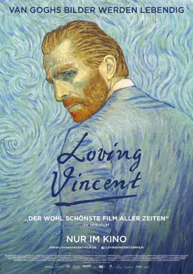

#7930 Loving Vincent
Auszeichnungen: für 1 Oscars nominiert
 
 IMDB-Wertung: 7.8 / 10
IMDB-Wertung: 7.8 / 10  Tomatometer: 85
Tomatometer: 85  Metascore: 62
Metascore: 62 
Ein Jahr nach dem Tod Vincent van Goghs taucht plötzlich ein Brief des Künstlers an dessen Bruder Theo auf. Der junge Armand Roulin erhält den Auftrag, den Brief auszuhändigen. Zunächst widerwillig macht er sich auf den Weg, doch je mehr er über Vincent erfährt, desto faszinierender erscheint ihm der Maler, der zeit seines Lebens auf Unverständnis und Ablehnung stieß. War es am Ende gar kein Selbstmord? Entschlossen begibt sich Armand auf die Suche nach der Wahrheit. LOVING VINCENT erweckt die einzigartigen Bilderwelten van Goghs zum Leben: 125 Künstler aus aller Welt kreierten mehr als 65.000 Einzelbilder für den ersten vollständig aus Ölgemälden erschaffenen Film. Entstanden ist ein visuell berauschendes Meisterwerk, dessen Farbenpracht und Ästhetik noch lange nachwirken.
Jahr: 2017
Dauer: 94 Minuten
FSK: 6
Land: England Studio: Weltkino FilmverleihTonspuren:
Untertitel:
Auflösung: 1080p (1488x1080) Größe: 4474 MB
Genre: Drama, Krimi, Animation/Trick, Biographie
Regisseur: Dorota Kobiela, Hugh Welchman
Drehbuch: Dorota Kobiela
Soundtrack: Clint Mansell
Darsteller:
 Douglas Booth als Armand Roulin
Douglas Booth als Armand Roulin- Josh Burdett als The Zouave
- Holly Earl als La Mousme
- Robin Hodges als Lieutenant Milliet
 Chris O'Dowd als Postman Joseph Roulin
Chris O'Dowd als Postman Joseph Roulin John Sessions als Pere Tanguy
John Sessions als Pere Tanguy Helen McCrory als Louise Chevalier
Helen McCrory als Louise Chevalier- Eleanor Tomlinson als Adeline Ravoux
 Aidan Turner als The Boatman
Aidan Turner als The Boatman Saoirse Ronan als Marguerite Gachet
Saoirse Ronan als Marguerite Gachet James Greene als Old Peasant
James Greene als Old Peasant- Martin Herdman als Gendarme Rigaumon
- Bill Thomas als Doctor Mazery
- Jerome Flynn als Doctor Gachet
- Robert Gulaczyk als Vincent van Gogh
- Cezary Lukaszewicz als Theo van Gogh
- Andrew Scott-Marshall als The Drinker (uncredited)
- Joe Stuckey als Young Man with a Cornflower
- Piotr Pamula als Paul Gaugin
- Bozena Berlinska-Bryzek als Jo van Gogh-Bonger
- Anastazja Seweryn als Vincent Willem van Gogh
- Borys Dominiuk als Young Vincent
- Bartlomiej Sroka als Theodorus van Gogh
- Kamila Dyoubari als Anna Cornelia Carbentus
- Przemyslaw Furdak als Emile Bernard
- Adam Pabudzinski als Henri Toulouse-Lautrec
- Keith Heppenstall als Camille Pissaro
- Graham Pavey als Old Ravoux
- Nina Supranionek als Germaine Ravoux
- Marcin Sosinski als Rene Secretan
- Carole Le Clanche als Mme Ravoux (uncredited)
- Shaun Newnham als Landlord of The Night Cafe (uncredited)
Datei: X:\HD-Trick\Loving Vincent (2017, FSK6, 1488x1080).mkv seit 07.01.2018
Festplatte: Kinder-Filme+Trick
 Es gibt insgesamt 28 Filme in der Gruppe 'HD-Trick'
Es gibt insgesamt 28 Filme in der Gruppe 'HD-Trick'